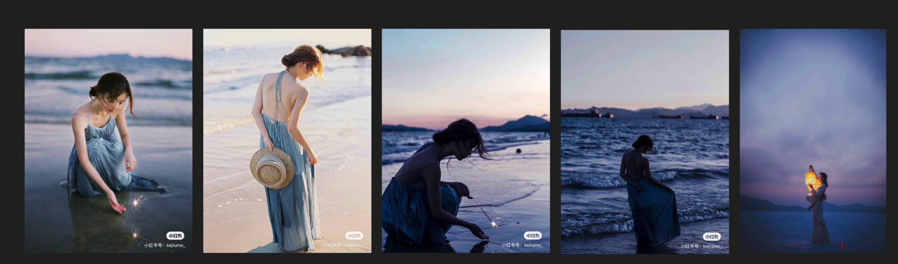

CCtalk, 泰罗的摄影私教课，人像摄影笔记
如何准备一次约拍
人文风光和人像的不同
人文风光更像记者或画家：
- 去合适的地方
- 选择合适的时间
- 用合适的角度
- 拍摄合适的对象
人像更像导演：
- 选择模特
- 选择环境
- 搭配服装道具妆容
- 引导模特情绪和姿态
人像比人文风光更难，谨防外归因：天气、环境、模特
拍人像，拍的是什么？
人：
- 什么样的人？
- 拍人的什么？全身，半身，背部，正面
- 人是什么状态？高兴，伤心
环境：
- 什么样的环境？公园，郊外，街道，影棚
- 环境的什么局部？公园里面的什么位置
- 环境的时候时候？早晨，中午，下午
关系：人和环境的关系是什么？环境的范围是什么？模特应该用什么情绪配合？服装，道具？
人和环境要和谐统一
如果没有好看的模特
有些照片不吃颜值 —— 环境人像
把握好环境和时间，以及模特服装
有些照片很吃颜值
约到好看的模特
- 同时朋友姐妹等等
- 不太贵的摄影师带拍
- 付费请模特
- 不打算付费，通过微博、同城网站、小红书等
- 有过硬的作品，才会有“硬模特”合作
- 先从其他类目入手，再贴近人像
梳理周边自己能捕捉到的资源，提升自己的实力；有好看的模特，是实力的一部分
关注摄影师如何做 导演（策划拍摄） 和 画家（调色） 的
导演难在何处
- 找不到好演员：演员尴尬，姿态僵硬；请老戏骨，成熟模特会加分
- 找不到好环境：演员情绪与环境不搭；有钱布置场景，好环境会加分
假设模特是业余的：
- 做好功课：积累优秀作品，想好拍摄的题材，地点与风格
- 沟通好服装与道具
- 脑海中设定好几个姿势，可以微信发给模特看感觉，模特会有所准备；降低模特预期，“拍着玩玩”
- 设定好与姿势相应的“情景模式”
- 见到模特先聊天，多夸模特总没错，“帮你P瘦”
- 情绪引导比姿态引导更重要
常见的拍摄地点
公园/郊外
清新自然感，绿植为主
用 85 拍摄，背景虚化，万能的白裙子，很仙的图

阴雨天，云朵相当于柔光罩，皮肤更好
水边
湖边或海边，水边背景相对纯粹
夕阳蓝调

青绿高调，日系，滨田英明风格

民宿
校园
校园通常环境比较好
JK 风格
图书馆
街道
日杂风
夜景人像
自制简易摄影棚
摄影纸+灯
积累图库
- 什么地点都有参考图
- 什么模特都有参考图
- 什么色调都有参考图
“文献综述”，防止“自以为是的创新”
去哪找？微博，ins，小红书，图虫, pinterest…
临时抱佛脚：百度、微博、图虫搜索
整理：分文件夹+抄绘
图库的深度，决定了想法的深度
不会引导模特怎么办
抄绘法
通过描绘的方式，强迫自己仔细地观察模特的情绪、道具和服装，以及构图
情绪比姿态更重要
描绘一个场景让模特带入
你在等车去春游，你在安静的看书，喜欢的人突然给你发了一条微信
模特嘴巴太紧张：舌头顶住上颚呼气
一些 tips
- 见到模特直接拍照会比较尴尬，最好在拍摄地点之前就见面，聊聊天
- 开始拍的时候不要执着，多换几个地点，避免模特有挫败感，多夸模特
- 进入状态再揪细节
- 首先要自己在状态，导演要用自己的情绪引导模特
- 万全的准备是不怯场的前提